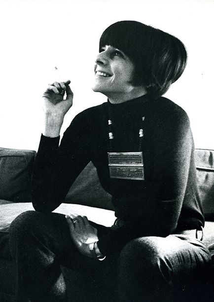

Elaine Lustig Cohen (1927–2016) fue una influyente diseñadora gráfica, artista y archivista
estadounidense. Nacida en Jersey City, Nueva Jersey, Cohen comenzó su educación en arte en el
H. Sophie Newcomb Memorial College de la Universidad de Tulane, donde desarrolló un temprano
interés en el "Constructivismo Internacional". Posteriormente, se trasladó a la
Universidad del Sur de California, donde se graduó en 1948.
Cohen se casó con Alvin Lustig, un conocido tipógrafo y diseñador vanguardista, y juntos se convirtieron en prominentes diseñadores gráficos, adoptando conceptos avanzados de estética modernista para el mercado estadounidense. Tras la muerte prematura de Alvin en 1955, Elaine continuó trabajando como diseñadora para Meridian Books y New Directions Books en Nueva York. Además, fue pionera en el campo de la señalización arquitectónica, trabajando en estructuras modernistas importantes.
En 1969, Cohen dejó el diseño comercial para dedicarse casi exclusivamente a la pintura, experimentando con medios mixtos, collage, escultura y grabado. Su estilo de pintura estuvo influenciado por la arquitectura, y aunque hay similitudes formales entre su trabajo de diseño y sus pinturas, Cohen aclaró que solo su proceso de pintura fue influenciado por su trabajo de diseño. Junto con su segundo esposo, el teólogo y escritor Arthur Cohen, con quien se casó en 1956, fundó Ex Libris en 1972, una librería en Manhattan especializada en materiales impresos raros de la vanguardia europea. Esta tienda se convirtió en su principal fuente de ingresos hasta la muerte de Arthur en 1986, y Elaine cerró la tienda en 1998. En 2011, se le otorgó la Medalla Aiga, un premio al diseño muy reconocido. Hasta 2016 estuvo dedicándose al arte y a las exposiciones.
Cohen se casó con Alvin Lustig, un conocido tipógrafo y diseñador vanguardista, y juntos se convirtieron en prominentes diseñadores gráficos, adoptando conceptos avanzados de estética modernista para el mercado estadounidense. Tras la muerte prematura de Alvin en 1955, Elaine continuó trabajando como diseñadora para Meridian Books y New Directions Books en Nueva York. Además, fue pionera en el campo de la señalización arquitectónica, trabajando en estructuras modernistas importantes.
En 1969, Cohen dejó el diseño comercial para dedicarse casi exclusivamente a la pintura, experimentando con medios mixtos, collage, escultura y grabado. Su estilo de pintura estuvo influenciado por la arquitectura, y aunque hay similitudes formales entre su trabajo de diseño y sus pinturas, Cohen aclaró que solo su proceso de pintura fue influenciado por su trabajo de diseño. Junto con su segundo esposo, el teólogo y escritor Arthur Cohen, con quien se casó en 1956, fundó Ex Libris en 1972, una librería en Manhattan especializada en materiales impresos raros de la vanguardia europea. Esta tienda se convirtió en su principal fuente de ingresos hasta la muerte de Arthur en 1986, y Elaine cerró la tienda en 1998. En 2011, se le otorgó la Medalla Aiga, un premio al diseño muy reconocido. Hasta 2016 estuvo dedicándose al arte y a las exposiciones.

Exposiciones
Destacadas
- Mary Boone Gallery (1979)
- Exit Art (1985)
- Cooper–Hewitt, National Design Museum (1995)
- "My Heroes: Portraits of the Avant-Garde" en Adler & Conkright Fine Art (2009)
- "RIT Graphic Design Archives" (2014)
- "The Glass House" (2015)
- "Masterpieces & Curiosities: Elaine Lustig Cohen" en el Museo Judío (2018)